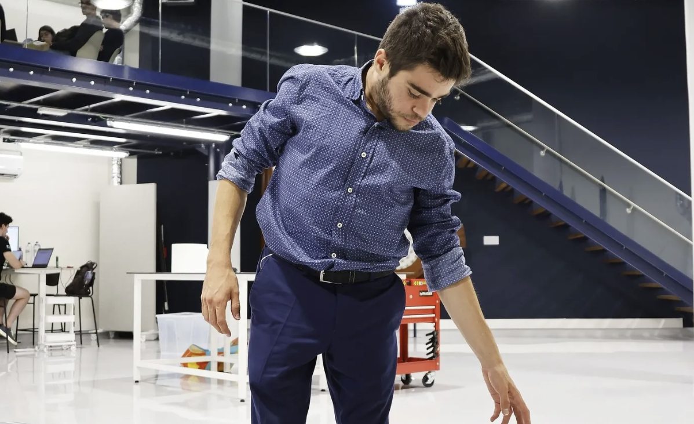

ArtigoSobre Mim
Quem sou
Olá! O meu nome é Alexandre Couto, tenho 24 anos, sou de Santo Tirso, atleta de Natação Adaptada do Sporting Clube de Portugal e da Seleção Nacional, e estudante de Engenharia Aeroespacial no Instituto Superior Técnico.
A minha história
Convivo com uma condição rara chamada síndrome de Morquio tipo B, que afeta principalmente a estrutura óssea e muscular. Foi por recomendação médica que entrei na natação ainda em criança — e foi dentro de água que descobri um lugar seguro, libertador e transformador.
Comecei na Piscina Municipal de Santo Tirso e, por volta dos 10 anos, entrei para a equipa do Ginásio Clube de Santo Tirso. Mais tarde, afastei-me temporariamente, mas o regresso à água — agora na natação adaptada — reacendeu a minha paixão.
Sporting e Seleção
Desde 2021, represento o Sporting Clube de Portugal. Tenho crescido no panorama nacional e alcançado objetivos marcantes. Atualmente, compito nas classes S8, SB7 e SM8.
Em abril de 2025, representei Portugal pela primeira vez numa prova internacional: o World Para Swimming Series Fuji–Shizuoka, no Japão — um passo decisivo no meu percurso internacional.
Além do desporto
A natação adaptada não é só desporto — é uma escola de vida. Cresci como atleta e como pessoa, ao lado de colegas que me ensinaram que o limite, muitas vezes, somos nós que o impomos.
No Técnico, aplico a mesma dedicação e resiliência. Nem sempre é fácil conciliar tudo, mas tenho tido o apoio de professores e amigos que fazem a diferença.
Mensagem
A minha mensagem para quem está a começar é simples: arrisquem, mesmo com medo. Os desafios existem, mas também existem formas de os ultrapassar. O importante é nunca desistir.
Agradecimentos
Gostava de agradecer muito aos meus pais, à minha irmã e aos meus avós, que sempre estiveram lá para mim. Agradeço também ao meu treinador, Rui Gama, e a todo o meu staff, em especial ao preparador físico João Carvalho.
Se me dessem a escolher nascer com o meu problema ou nascer “normal”, escolheria sempre o caminho que tive e a luta que tenho — aprendi tanto!